题目要求说出你对 15 类人的「整体印象」—— as a class of people rather than as an individual。这正是刻板印象（stereotype）的定义。这一课的难点不在词汇，在分寸：英语里直接说 Doctors are greedy 会显得武断甚至冒犯。课本例题的写法其实给了答案 —— 它把刻板印象放在引号里，开头是 Some people describe politicians with this stereotype:。也就是说，你要学的是「转述」一个刻板印象，然后再说它哪里对、哪里不对，而不是认同它。
转述 — 说清这是「别人的看法」There's a common stereotype that doctors only care about money.
承认来源 — 它为什么会存在I can see where it comes from — medical bills can be very high, and some hospitals do push expensive tests.
拆解 — 它哪里不公平，你怎么看But most doctors I know work far longer hours than they're paid for. The prices are set by the system, not by them.
第一步那几个词，是整课最重要的。There's a stereotype that… / People often assume… / The usual image of X is…
—— 它们让你可以讨论一个偏见，而不被当成持有这个偏见的人。
直接说 Doctors are greedy 和说 There's a stereotype that doctors are greedy，在英语听者耳朵里是完全不同的两个人。
The usual image of a movie star is someone glamorous and spoiled.
People tend to assume that…
中立，略带「这是假设」
People tend to assume that PhDs are bad at practical things.
There's a stereotype that…
明确标出「这是刻板印象」
There's a stereotype that garbage collectors are uneducated.
There's an unfair idea that…
直接表明你不同意
There's an unfair idea that stay-at-home mothers don't work.
B · 三种拆解方式
方式
怎么说
最适合
找反例
Not all X are like that. For example, …
你认识这类人，有亲身经历
找原因
The problem isn't the people, it's the system / the job.
医生、警察、律师 —— 职业受制度影响
纠正事实
Actually, the facts are different: …
刻板印象建立在错误认知上（如 HIV 的传播方式）
避免绝对化的词：all, every, always, never。 ✗ All politicians are liars. ✓ Some politicians are dishonest, but it's a generalisation to say they all are. 用 some / many / tend to / often 代替 all / always，你的话立刻从「偏见」变成「观察」。
a former prisoner / someone with a criminal record
ex-con 是口语俚语，带标签意味
nude model
an art model / a life model
美术课上的人体模特是正常职业，图里的杂志是另一回事
03课本例题：一个被引号括起来的刻板印象
例题是 Politicians。注意课本的写法：第一句是 Some people describe politicians with this stereotype:，后面整段都在引号里。这不是作者的观点，而是作者在展示一种刻板印象长什么样。理解这一点，是这一课的关键。
Example
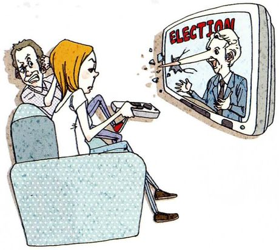
Politicians /ˌpɑːləˈtɪʃnz/
What you seeA woman on a sofa angrily pointing the remote at the TV, where a politician under the word ELECTION is speaking — and his nose has grown long, like Pinocchio's, poking right out of the screen. The man behind her looks alarmed.
The stereotype政客天生撒谎、会为谎言找借口、追逐权力、不懂普通人的需要。课本脚注：stereotype = 对某一群体的笼统概括，通常夸大、简化，且常带冒犯性。
Say it like this"Some people describe politicians with this stereotype: 'They are liars by nature. If a man couldn't lie, he wouldn't have a future in politics. Furthermore, politicians are good at justifying their lies, and they always seem ready to make up another one. Power-hungry liars surely have difficulty understanding other people's real needs and problems. We shouldn't believe anything they say.'"
上课时，你应该在课本答案后面加一段自己的话。
课本只给了「刻板印象是什么」，没有给第三步「拆解」。你可以这样补上：
That's the stereotype, and I understand why people feel that way — broken promises are very visible. But it's also a self-fulfilling idea: if voters assume every politician lies, honest people stop going into politics, and then the stereotype becomes truer.
例题里 make up 的意思和前几课不同。
课本脚注：这里的 make up = 编造（借口、谎言）。
Lesson 4 的 make up 是「和好」，Lesson 28 的是「弥补」。同一个短语，三课三个意思，要靠上下文判断。
04十五类人：刻板印象与真实
每张卡三段：What you see 描述图（图本身往往就画了刻板印象），The stereotype 用中文说清那个印象和它的漏洞，Say it like this 给三档：① 转述印象 / ② 转述 + 来源 / ③ 完整三步，含你的观点。
01
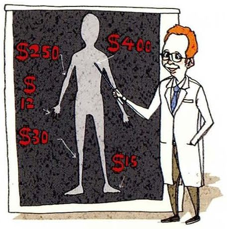
Doctor /ˈdɑːktər/
What you seeA smiling doctor pointing at a chart of a human body, where every part has a price tag: $250, $400, $30, $15.
The stereotype两个相反的印象：受人尊敬的救命者，和图里这种「只看钱」的人。漏洞：价格多数是体制决定的，不是医生个人。
Say it like this①The picture shows the stereotype that doctors only care about money. ②There's a stereotype that doctors are money-driven, and I can see why — medical bills can be frightening, and people sometimes feel pushed into expensive tests. ③There are actually two stereotypes of doctors: the respected life-saver and the greedy one in this picture. The greedy image comes from high bills, but the prices are usually set by hospitals and insurance systems, not by the doctor in front of you. Most doctors I know work long hours for less than people imagine. So I'd say the problem is the system, not the people.
02
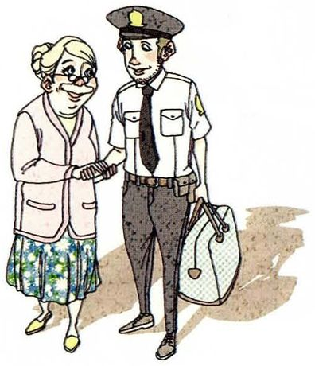
Police officer /pəˈliːs ˌɔːfɪsər/
What you seeA friendly police officer carrying an elderly woman's handbag and shaking her hand. She's beaming at him.
The stereotype这张图画的是正面刻板印象：乐于助人的好警察。正面刻板印象也是刻板印象 —— 不同国家、不同人对警察的印象差别很大。
Say it like this①The picture shows a positive stereotype: the friendly police officer who helps old ladies. ②The usual image here is positive — someone who keeps you safe and helps people. In my experience that's mostly true, though people's impressions depend a lot on where they live. ③This is an interesting one because it's a positive stereotype, and those are easier to miss. In China, most people's image of the police is fairly positive — they're who you call when you lose something. But in some countries, certain groups have very different experiences of the police. So I'd say the image depends less on the job and more on who's looking at it.
03
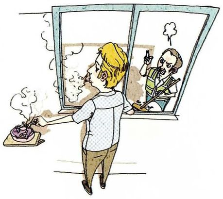
Smoker /ˈsmoʊkər/
What you seeA man smoking at an open window, with an ashtray full of ends, while his smoke drifts straight into the window next door, where a neighbour is shouting at him.
The stereotype不顾别人、自私。漏洞：很多吸烟者其实很注意，而且很多人想戒但戒不掉 —— 那是成瘾，不只是性格。
Say it like this①The stereotype is that smokers don't care about the people around them. ②People tend to see smokers as inconsiderate, like the man in the picture whose smoke goes into his neighbour's window. That does happen, unfortunately. ③The common image is the inconsiderate smoker in the picture. Some are like that, but many smokers I know go out of their way to smoke away from others, and most of them wish they could quit. I'd separate the behaviour from the person: blowing smoke at your neighbour is rude, but being addicted isn't a personality flaw.
04
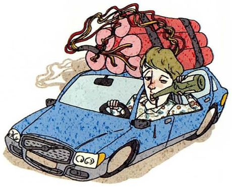
Drunk driver /drʌŋk ˈdraɪvər/
What you seeA woman slumped over the wheel of a blue car, holding a bottle out of the window, with a huge bundle of dynamite tied to the roof — a bomb on wheels.
The stereotype这一题和其他题不同：它描述的是一种行为，不是一类人。负面印象在这里基本是合理的，可以直接表态。
Say it like this①The picture says it clearly: a drunk driver is a bomb on the road. ②My impression of drunk drivers is completely negative, and I don't think that's a stereotype — it's a fair judgement of a dangerous choice. ③This one is different from the others, because "drunk driver" describes something someone does, not who they are. So I don't feel I need to defend them: driving drunk is a choice that puts other people's lives at risk. The dynamite on the roof is exaggerated, but the idea behind it is accurate.
05
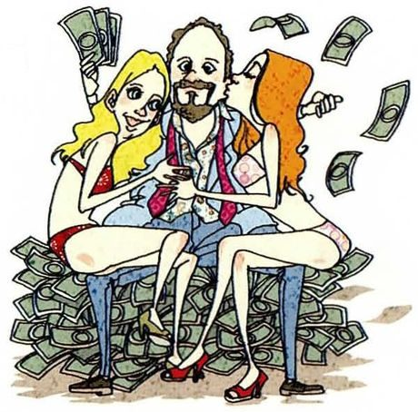
Tycoon /taɪˈkuːn/
What you seeA bearded man sitting on a mountain of banknotes with two women hanging on him, money flying through the air.
The stereotype课本脚注：tycoon = 商界或工业界成功、有钱有权的人。印象：贪婪、奢侈、生活混乱。漏洞：很多大企业家其实生活很朴素、工作非常拼。
Say it like this①The stereotype of a tycoon is someone greedy who spends money on luxury and parties. ②The usual image is the one in the picture — sitting on money, surrounded by attention. Some rich people really live like that, and it's what the media likes to show. ③The picture is the tabloid version. In reality, many successful business people are workaholics who live quite ordinary lives, and some give a lot of money away. I'd say the stereotype survives because the flashy ones are the ones we hear about. The more serious question isn't how tycoons spend their money — it's how much power that money gives them.
06
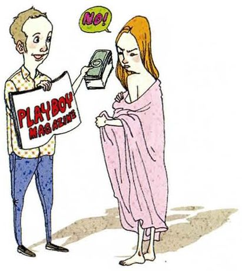
Nude model /nuːd ˈmɑːdl/
What you seeA man holding out a magazine and a wad of cash to a woman wrapped in a pink sheet, and she's turning away saying NO!
The stereotype敏感题。印象：随便、只为钱。图里有个有意思的反转：她拒绝了。区分美术课的人体模特（life model）和商业杂志。
Say it like this①There's a stereotype that nude models will do anything for money — but in the picture, she says no. ②People often assume nude models are only in it for money. But the woman in the picture is refusing the money, which already breaks the stereotype. ③I'd separate two very different jobs. A life model poses for art students — it's a normal, respected job, and art schools have used models for centuries. Commercial magazines are something else. The stereotype mixes them together and assumes the worst. The picture actually makes my point: she's turning the money down, because she decides what she does.
07
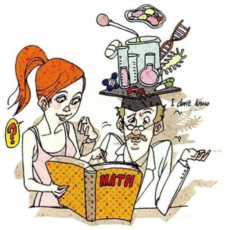
Person with a Ph.D. /ˌpiː eɪtʃ ˈdiː/
What you seeA man with lab flasks, DNA and a microscope piled on his head, looking at a girl's maths book and saying I don't know. She has a big question mark beside her.
The stereotype只懂一个很窄的领域，生活能力差、不切实际。你是博士生，这一题你最有发言权 —— 可以自嘲，也可以纠正。
Say it like this①The stereotype is that people with a PhD know everything about one tiny topic and nothing else. ②People tend to assume PhDs are clever but impractical — like the man in the picture who can't help with a child's maths homework. There's a grain of truth in it: we do specialise very narrowly. ③As a PhD student, I have to admit there's some truth here — I know a lot about one narrow problem, and I once forgot how to do long division in front of my cousin. But the stereotype misses the main thing a PhD teaches: how to work on a problem nobody has solved, for years, without giving up. That's a very practical skill, just not the kind you can show at the dinner table.
08
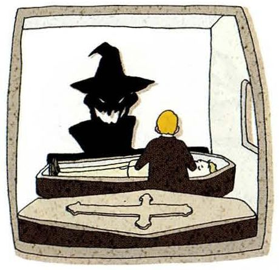
Mortician /mɔːrˈtɪʃn/
What you seeA dark, witch-like figure with a pointed hat and glowing eyes, looming behind a coffin with a cross on the lid, next to a small figure.
The stereotype课本脚注：mortician = 安排葬礼、为遗体做准备的人。印象：阴森、诡异。漏洞：这份工作其实非常需要同理心。
Say it like this①The stereotype is that morticians are dark, creepy people. ②People tend to imagine morticians as creepy, like the witch-like figure in the picture, mostly because people are uncomfortable with death. ③The creepy image says more about our fear of death than about the people who do the job. A mortician meets families on the worst day of their lives, so the job actually needs a lot of kindness and calm. In China it's still a job many people avoid talking about, but the ones I've seen interviewed are some of the gentlest people you could meet.
09
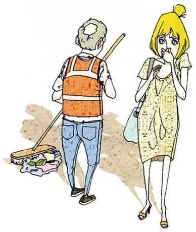
Garbage collector /ˈɡɑːrbɪdʒ kəˌlektər/
What you seeAn older street cleaner in an orange vest pushing a broom past a young woman, who's holding her nose and turning away.
The stereotype脏、地位低、没文化。漏洞：这是城市最离不开的工作之一；而且图里那个捏鼻子的人，才是这幅画真正的问题。
Say it like this①The stereotype is that garbage collectors are dirty and low-status. ②People often look down on garbage collectors, like the woman holding her nose in the picture. But the job is dirty — the person isn't. ③I think the picture is really about the woman, not the cleaner. If garbage collectors stopped working for a week, a city would become unlivable — that's not true of most office jobs. The stereotype is that it's a low-status job; I'd say it's an undervalued one. My grandfather swept streets for years, and he was one of the most dignified people I knew.
10
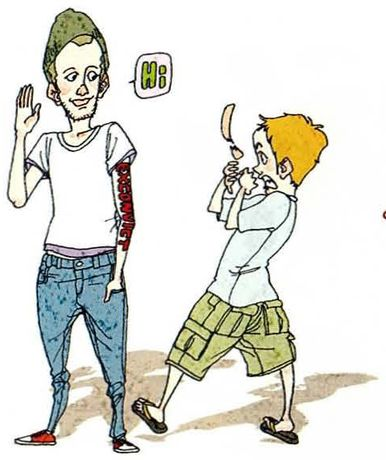
Ex-con /ˌeks ˈkɑːn/
What you seeA young man with a tattooed arm waving and saying Hi! in a friendly way, while a boy next to him covers his mouth and backs away, frightened.
The stereotype课本脚注：ex-con = 坐过牢的人（口语）。印象：危险、会再犯。漏洞：歧视让他们找不到工作，反而增加了再犯的可能。图里友好的是他，害怕的是别人。
Say it like this①The stereotype is that former prisoners are dangerous and will commit crimes again. ②People tend to be afraid of anyone who's been in prison, like the boy in the picture. But the man is just saying hello. ③The stereotype creates a trap. If people with a criminal record can't get a job or a flat because everyone's afraid of them, they're more likely to end up back in crime — so the fear makes itself come true. I'd say once someone has served their sentence, they deserve a real second chance. The picture gets it right: he's the one being friendly.
11
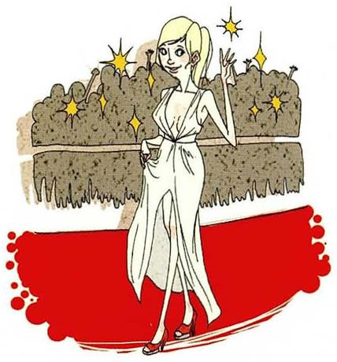
Movie star /ˈmuːvi stɑːr/
What you seeA glamorous actress in a long white dress posing on a red carpet, with camera flashes sparkling and a crowd of photographers behind her.
The stereotype光鲜、虚荣、被宠坏。漏洞：红毯只是工作的一小部分，大量时间在辛苦拍摄，而且隐私几乎为零。
Say it like this①The usual image of a movie star is glamorous, rich and a bit spoiled. ②People tend to see movie stars as vain and spoiled, because we mostly see them on red carpets like this one. ③The red carpet is the part of the job we see, which is exactly why the stereotype exists. In reality, filming means sixteen-hour days and repeating the same scene thirty times, and they can't go to a supermarket without being photographed. Some are spoiled, certainly. But I wouldn't trade my privacy for their life.
12
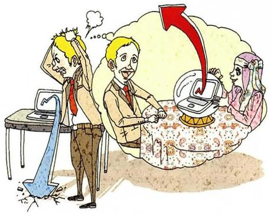
Fortune teller /ˈfɔːrtʃən ˌtelər/
What you seeA stressed office worker scratching his head at a desk where something has spilled, and a thought bubble showing him sitting across from a fortune teller, hoping for an answer.
The stereotype骗子、利用别人的焦虑赚钱。漏洞：有些人去算命更像是找人倾诉。和 Lesson 26「迷信」呼应。
Say it like this①The stereotype is that fortune tellers are tricksters who take advantage of worried people. ②People often see fortune tellers as frauds, and the picture shows why: the customer is someone stressed and looking for an easy answer. ③I'm sceptical about fortune telling itself, but I'd be careful with the stereotype of the people who do it. Some are clearly taking advantage of worried customers. But others are doing something closer to counselling — listening to someone's problems and giving them confidence to decide. The customer in the picture doesn't need the future predicted; he needs someone to talk to.
13
Playboy /ˈpleɪbɔɪ/
What you seeA man in sunglasses with a woman on each arm, everyone cheering as banknotes rain down around them.
The stereotype有钱、不负责任、换女朋友很快。这一题本身就是一种「生活方式」的标签，可以谈谈这种生活的空洞。
Say it like this①The stereotype of a playboy is a rich man who spends money on parties and doesn't take relationships seriously. ②The usual image is the one in the picture: money everywhere and a different woman every week. It's often linked to inherited wealth. ③"Playboy" is really a label for a lifestyle, so the stereotype is partly built into the word. What I'd question is the idea that it's an enviable life. The picture shows the fun, but I suspect it's quite lonely — when people are around you for your money, it's hard to know who actually likes you.
14
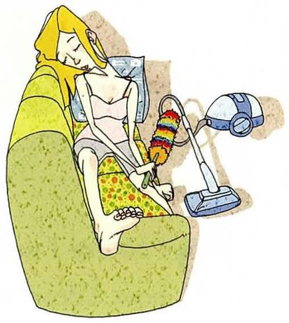
Stay-at-home mom /ˌsteɪ ət hoʊm ˈmɑːm/
What you seeA woman lying across a sofa with her eyes closed and feet up, while a vacuum cleaner and a feather duster sit beside her, unused.
The stereotype闲在家、不工作、很轻松。漏洞：带孩子和家务是没有报酬、没有下班时间的工作。和 Lesson 8、16 的「家务分工」「家庭主夫」呼应。
Say it like this①The stereotype is that stay-at-home mothers don't really work. ②There's an unfair idea, like in the picture, that stay-at-home mothers just relax all day. Anyone who's looked after a small child knows that's not true. ③The picture shows the stereotype exactly: lying on the sofa while the vacuum cleaner waits. But childcare and housework are full-time jobs with no salary, no weekends and no clocking off. If she's asleep on the sofa, my guess is it's because the baby kept her up all night. The real problem is that unpaid work is invisible, so people assume it isn't work.
15
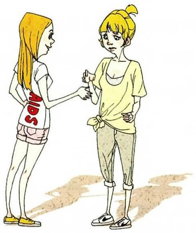
AIDS patient /eɪdz ˈpeɪʃnt/
What you seeA young woman with AIDS printed on the back of her shirt, holding hands with another young woman, who looks a little uncertain but doesn't let go.
The stereotype最敏感的一题。印象：危险、会通过日常接触传染。这是事实错误：HIV 不会通过握手、拥抱、共用餐具传播；坚持治疗的人可以长寿，病毒检测不到时也不会通过性传播。用「纠正事实」的方式来拆解。
Say it like this①The stereotype is that people with HIV are dangerous to be around — but that's simply not true. ②Many people are afraid of touching someone with HIV, but you can't catch it by shaking hands, hugging or sharing a meal. The picture shows a friend holding her hand, which is completely safe. ③This is a stereotype based on wrong information, so the best answer is facts. HIV isn't spread through everyday contact — not handshakes, hugs or shared food. And with modern treatment, people living with HIV can live long, normal lives. The real harm now often comes from the stigma, not the virus: people avoid getting tested because they're afraid of how others will treat them. The friend in the picture is doing exactly the right thing.
What stereotypes do people have about Chinese people?
A few common ones: that we're all good at maths, that we work all the time, and that we're quiet in class. There's a grain of truth in some of them — education is taken very seriously at home. But it's a generalization. I'm terrible at mental arithmetic, and I'm only quiet in English because I'm still finding my words.
用本课的三步：列出印象 → 承认 a grain of truth → 用自己当反例。最后一句自嘲很自然。
Have you ever been stereotyped?
Yes — as a PhD student. When relatives find out what I do, they assume I'm either a genius or completely useless at real life. At family dinners they ask me to fix their phones, and then they're surprised when I can't. It's harmless, but it showed me how quickly people decide who you are from one label.
和第 7 题呼应，讲一个轻松的亲身经历，再从中引出一个观察。这是讲个人经历最好的结构。
Are stereotypes ever useful?
They're a shortcut, and the brain uses shortcuts all the time, so they're probably impossible to avoid completely. The problem is when we stop checking them. A stereotype is fine as a first guess, as long as you're willing to change it the moment you meet a real person.
不简单说「刻板印象都不好」，而是承认它的心理机制，再给出一个健康的态度。这是 Part IV 典型的有层次的表态。
Is the textbook's example fair to politicians?
I think the textbook is showing us what a stereotype looks like, not agreeing with it — it puts the whole thing in quotation marks. As a description of a stereotype, it's accurate. But as a judgement, it's unfair, because it makes the stereotype come true: if everyone assumes politicians lie, honest people won't bother going into politics.
Which stereotype in this lesson do you think is the most harmful?
The one about people with HIV, because it's based on wrong facts and it has real consequences. People avoid getting tested because they're afraid of how others will treat them, so the stigma actually helps the virus spread. The ex-con one is a close second, for similar reasons — the fear makes the problem worse.
选一个、给出「后果」作为理由，再提第二个并说明共同点。把两个题目联系起来，显示你在思考规律。
Which stereotype here is closest to the truth?
Honestly, the drunk driver — but that's because it isn't really a stereotype. It describes a choice someone made, not a group they belong to. That's the difference I'd draw: it's fair to judge people by what they do, and unfair to judge them by what group they're in.
用这道题提炼出整课的原则：按行为评判可以，按群体评判不行。这是一个很好的收尾观点。
07这节课最容易犯的错
这一课的错误一半是语法，一半是「语气」—— 说得太绝对，会让人以为你真的这么想。
✗All politicians are liars. ✓There's a stereotype that politicians are liars. / Some politicians are dishonest.
直接下全称判断，会被当成你的观点。加上转述框架或用 some，立刻不同。
✗I have a stereotype of doctors. ✓My impression of doctors is… / I tend to think doctors are…
stereotype 一般指社会上流行的看法，不说「我拥有一个刻板印象」。说个人印象用 impression。
✗He is ex-con. ✓He's an ex-con. / He has a criminal record.
ex-con 是可数名词，要加冠词。更尊重的说法是 has a criminal record。
✗People who have PhD are not practical. ✓People with a PhD are often seen as impractical.
PhD 可数，要加 a；用 people with 比 people who have 简洁。加 are seen as 表示这是别人的看法。
✗You can be infected AIDS by touching. ✓You can't catch HIV by touching someone.
两个错：事实错误（握手不会传染），以及搭配错误（catch / be infected with，不能直接接宾语）。
✗Stay-home moms have nothing to do. ✓There's a stereotype that stay-at-home moms have nothing to do.
固定说法是 stay-at-home mom / mother。内容上，这句话要用转述框架包起来。
✗Garbage collector is a dirty people. ✓Garbage collection is a dirty job, but that doesn't make the workers dirty.
people 是复数，不加 a。内容上，区分「工作脏」和「人脏」，这正是拆解刻板印象的关键。